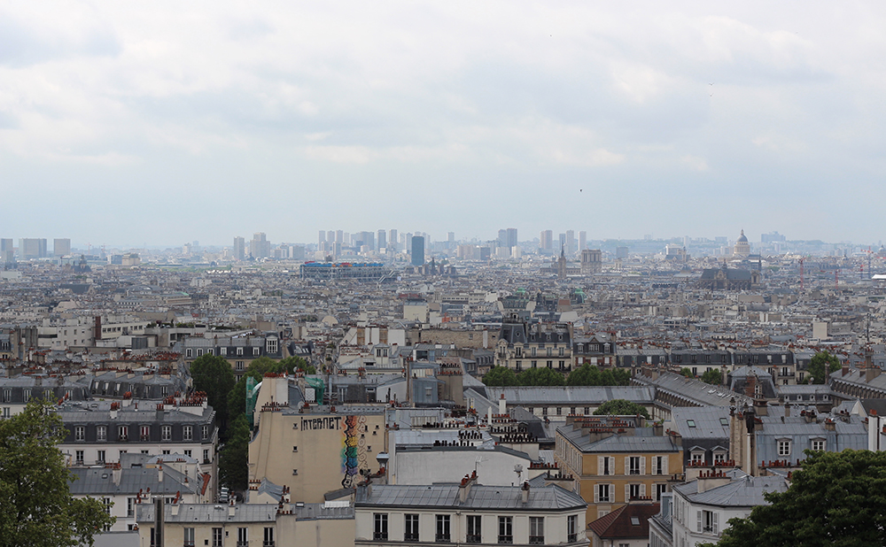

En portfoliosida med mina egna bilder!
Processanalys
Jag har valt att utgå från den mall som ni försett oss med, men med lite små ändringar. T.ex att jag har en wrapper på min sida för att jag tycker det är ett snyggt och enkelt sätt att centrera innehållet. Jag har valt att koda i xHtml eftersom jag har gjort majoriteten av checkpoint-uppgifterna i det formatet. Också för att det kändes mer som en utmaning eftersom att Html5 är lättare att få validerad korrekt.
Mitt arbete började med att jag funderade på vad jag ville ha för innehåll på min sida, vad de olika flikarna i huvudmenyn skulle leda till för sidor. Jag kom fram till att i menyn ville jag ha en flik för processanalysen, en för foto-portfolion och en som leder tillbaka till startsidan. Detta resulterar i att min sida består utav 3 olika html filer. Index.html, processanalys.html och portfolio.html. Sedan har jag 2 olika css filer, en primär som styr utseendet för hela sidan och en egen css för print versionen. I början av mina två css filer har jag använt en css reset för att undvika att webbläsarna ska lägga på egna stilregler. (Eric A. Meyer, 2011)
Semantik och namngivning:
Jag har försökt hålla samma standard och typ av namngivning genom koden. T.ex döper jag något med mer än ett ord har jag understreck mellan orden. Exempelvis .header_text eller .footer_menu. De större elementen på sidan har jag gett id:n (header, wrapper, footer osv) sedan har har jag använt mig utav classer. Jag försöker hålla namngivningen meningsfull utan att bli för specifik. Exempelvis kolumnerna med de runda bilderna. Istället för att döpa till dem till left_section, middle eller right fick de bli section_A, B och C. Eftersom jag sedan byter ordning på kolumnerna i mobilversionen hade det blivit förvirrande om den kolumnen som skulle vara överst då var döpt till t.ex middle_section.
Indenteringen har jag hela tiden gjort på det vis att när något ligger inom en div/ ett element indenteras det med 2 mellanslag. Jag har försökt att hålla koden så clean och semantisk som möjligt genom t.ex att indentera, kommentera där det är nödvändigt och ge meningsfulla namn. (Patrik Bernhardsson, 2014, Semantisk HTML och Clean Code)
Typsnitt och bakgrund:
Jag har använt en Google font som heter Anton till mina h1 och h2 rubriker. (Vernon Adams, u.å) Denna fonten hade en snabb laddningstid vilket är viktigt när man ska använda ett externt typsnitt på sin hemsida. Till meny och headertext har jag använt Arial och till brödtext fick det bli Helvetica. Jag har valt att ha en gradient effekt på min sidas bakgrund, en ljus färg som tonas ner till en mörk. Jag satte alltså i min css background till linear-gradient och 2 olika färger. (W3Schools, u.å, Linear Gradient - Top to Bottom).
Meny:
Min horisontella navigations meny i headern har jag valt att lösa med en onumrerad lista. Det är ett av de förslagen som föreslås när man söker efter alternativ hur man kan skapa en meny i html och css. (W3Schools, u.å, CSS Navigation Bar) (Webbdesignskolan, u.å, CSS-meny: Horisontella menyer.) Och jag valde att använda mig utav just omnumrerad lista eftersom att det är det jag använt mig av tidigare i checkpointsen och redan kände mig bekväm med.
Positionering utav objekt:
Överlag har jag använt mig utav float, clear och margins för att positionera saker på min sida. För att göra det hela lättare sen när sidan ska bli responsive har jag inte satt några höjer på objekt och inte heller bredd om det inte behövs. När bredd har behövts har jag i flera fall använt mig utav procentvärden framför pixlar då detta sedan förenklar mitt arbete i Media Queries.
Positioneringen av de tre kolumnerna har jag valt att lösa med float, eftersom jag kände mig mest bekant med det tillvägagångssättet från checkpointsen. (Webbdesignskolan, u.å, Float - justering i sidled) Men jag vet att man även kan använda sig utav inline-block i detta fallet. (learnlayout.com, u.å) Runt mina tre kolumner har jag valt att lägga en 1px bred border runt och sedan även en boxshadow. (W3Schools, u.å, CSS3 box-shadow Property).
Jag sökte runt för att hitta olika sätt att positionera vissa objekt över andra, detta t.ex till de runda bilderna som ska överlappa header bilden. Först tänkte jag använda mig utav z- index som ni pratat om i genomgångarna. (Patrik Bernhardsson, 2014, CSS: Positionering Z Index.) Men sedan insåg jag att det funkade att endast använda mig utav position: relative för att positionera de objekt jag ville ha överst. (developer.mozilla.org, 2017)
Bilder:
Alla bilder jag har använt på sidan är mina egna.
Portfolion har jag löst med hjälp utav flexbox och kolumner. Jag valde att ha min wrapper kvar för att ha ett liknande utseende på alla mina html sidor. Wrappern jag har är 1000 px bred. Jag ville ha bilderna i 2 kolumner bredvid varandra där bilderna lägger sig i ett snyggt flow och flyter ihop mot varandra. Därför satte jag var bilds bredd till 500 px för att det skulle rymmas 2 bilder i bredd inom wrappern. (Chris Coyier, 2017)
För de runda bilderna i boxarna har jag använt mig utav border-radius: 50%. Detta var det simplaste sättet jag hittade för att skapa runda bilder. Jag behövde endast beskära bilderna jag ville använda till kvadrater och styla med border-radius: 50%; i css så hade jag mina runda bilder. Jag la sedan en vit border på 13 pixlar för att rama in bilderna som på mockupen. Jag la de runda bilderna inom kolumnernas divar och positionerade dem med margin för att få dem att ligga i överkant och ytterkant, och för att centrera bilden i mittenkolumnen. (W3Schools, u.å, CSS Images- Rounded Images)
Mobil och iPad versioner:
Jag har gjort min sida först för desktop och sedan anpassat den för iPad och mobil. Därav har jag använt mig utav max-with och inte min-with i Media Queries. Jag har jobbat med Media Queries och baserat måtten för brytpunkterna på främst detta exempel: (The Interaction Design Foundation, 2017)
 iPhone 4 och 5 är har skärmvidder på 640 pixlar och iPhone 6 är 750 pixlar bred. (iPhone 6+ och 7an och 8an som kommer nu är ännu större.) Jag har iallafall valt att sätta brytpunkten för mobilbredd vid 767 pixlar, eftersom den smalaste iPad versionen börjar på 768 pixlar.
iPhone 4 och 5 är har skärmvidder på 640 pixlar och iPhone 6 är 750 pixlar bred. (iPhone 6+ och 7an och 8an som kommer nu är ännu större.) Jag har iallafall valt att sätta brytpunkten för mobilbredd vid 767 pixlar, eftersom den smalaste iPad versionen börjar på 768 pixlar.
Det finns flera olika tillvägagångssätt för att byta ordning på element på sin sida, som i den svårare mobil-mockupen. Den lösning som funkat för mig är Flexbox. (Jag försökte först med float och clear som jag såg att ni föreslagit i forumet när andra ställt frågor om hur man kan lösa detta problemet.) Genom att ge varje kolumn ett id #A, #B och #C och använda css propertyn ”order” kan jag själv välja i vilken ordning de ska visas. (Marat Tanalin, 2017)
Print:
Jag har valt att göra min media=print i en separat css. Det stora bild element jag valt att ta bort på min sida i utskriftsversion är headern. Jag valde att behålla logotypen istället just för att det inte ska bli helt tomt längst upp på sidan. De 3 runda bilderna över kolumnerna och portfoliobilderna måste ju givetvis vara kvar då de utgör större delen av innehållet på sidan. Jag har även valt att ta bort header texten då den kändes överflödig när headern försvann, och även navigeringsmenyn behöver ju inte finnas med i utskrift. Hade jag haft massa olika glada färger på fonter hade jag även ändrat dessa till svartvit och om bakgrunds färg och wrapper hade kommit med i utskrifts förhandsvisningen hade jag valt att ta bort dem också. ( I det här fallet verkar de falla bort automatiskt.)
Jag försökte även ta bort titeln på sidan, datum, sidnummer och url med hjälp utav olika margins i min print.css. Och hittade tillslut en lösning på denna sida som jag ändrade lite i för att det skulle passa min sida. (stackoverflow.com, 2017)
Detta funkade i Chrome och i Firefox. Men när jag sedan testade i Safari märkte jag att det inte hjälpte där. Vilket berodde på att Safari inte stödjer @page. (caniuse.com, 2017) Men å andra sidan kan man i Safari (och även i Chrome och Firefox) välja att inte skriva ut header och footer vilket iallafall på min sida gör att dessa element jag vill ha bort då skulle försvinna. (Whitman Collage, 2017)
Nästa problem jag då stötte på i förhandsvisningen utav utskriftsversionen var att på portfoliosidan kapades vissa bilder då hela inte fick plats på samma sida. Det jag hittat som man skulle kunna använda för att motverka detta är ”page-break”. Man kan sätta t.ex page-break-inside: avoid; på ett element för att motverka detta. Detta kan man ju även använda om man t.ex inte vill att sektioner med text ska delas osv. (Sara Cope, 2013) Jag har dock inte lyckats med detta på min sida då jag inte vet hur jag ska specificera att det är bilderna inom id=”portfolio” jag vill åt. Istället har jag lagt div:ar med class="page_break" efter de bilder där jag vill att det ska brytas till ny sida.
Källförteckning:
- • caniuse.com. (2017). CSS Paged Media (@page). [Elektronisk] Tillgänglig: http://caniuse.com/#feat=css-paged-media. [Hämtad: 2017-11-02]
- • Chris Coyier. (2017-10.30). A Complete Guide to Flexbox. [Elektronisk] Tillgänglig: https://css-tricks.com/snippets/css/a-guide-to-flexbox/. [Hämtad: 2017-11-04]
- • developer.mozilla.org. (2017-10-25). Stacking without the z-index property. [Elektronisk] Tillgänglig: https://developer.mozilla.org/en-US/docs/Web/CSS/CSS_Positioning/Understanding_z_index/Stacking_without_z-index. [Hämtad: 2017-11-04]
- • Eric A. Meyer. (2011). CSS Tools: Reset CSS. [Elektronisk] Tillgänglig: https://meyerweb.com/eric/tools/css/reset/reset.css. [Hämtad: 2017-11-03]
- • learnlayout.com. (u.å) inline-block [Elektronisk] Tillgänglig: http://learnlayout.com/inline-block.html. [Hämtad: 2017-11-04]
- • Marat Tanalin.(2017-06-28). Vertical reordering of blocks with CSS: Modern browsers - Flexbox. [Elektronisk] Tillgänglig: http://tanalin.com/en/articles/css-block-order/. [Hämtad: 2017-11-04]
- • Patrik Bernhardsson, (2014-10-27). Semantisk HTML, [Video online] Tillgänglig: https://youtu.be/qzQiCtQjShk. [Hämtad: 2017-11-04]
- • Patrik Bernhardsson, (2014-10-27). Clean Code. [Video online] Tillgänglig: https://youtu.be/qx9TuQJetRY. [Hämtad: 2017-11-04]
- • Patrik Bernhardsson, (2014-10-27). CSS: Positionering Z Index. [Video online] Tillgänglig: https://youtu.be/sihv0YZsZQ0?list=PLhAmtjlxenRsFo0nHd7TNcbIcp3QcvzjP. [Hämtad: 2017-11-04]
- • Sara Cope, (2013-06-08). Page-break. [Elektronisk] Tillgänglig: https://css-tricks.com/almanac/properties/p/page-break/. [Hämtad: 2017-11-04]
- • stackoverflow.com (2017). Removing page title and date when printing web page (with CSS?). [Elektronisk] Tillgänglig: https://stackoverflow.com/questions/2573603/removing-page-title-and-date-when-printing-web-page-with-css . [Hämtad: 2017-11-04]
- • The Interaction Design Foundation, (2017). Responsive Design – Let the Device Do the Work. [Elektronisk] Tillgänglig: https://www.interaction-design.org/literature/article/responsive-design-let-the-device-do-the-work. [Hämtad: 2017-11-04]
- • Vernon Adams. (u.å). Anton, [Elektronisk] Tillgänglig: https://fonts.google.com/specimen/Anton. [Hämtad: 2017-11-03]
- • W3Schools. (u.å). Linear Gradient - Top to Bottom (this is default). [Elektronisk] Tillgänglig: https://www.w3schools.com/css/css3_gradients.asp. [Hämtad: 2017-11-03]
- • W3Schools. (u.å). CSS Navigation Bar. [Elektronisk] Tillgänglig: https://www.w3schools.com/css/css_navbar.asp . [Hämtad: 2017-11-03]
- • W3Schools. (u.å). CSS3 box-shadow Property. [Elektronisk] Tillgänglig: https://www.w3schools.com/cssref/css3_pr_box-shadow.asp . [Hämtad: 2017-11-03]
- • W3Schools. (u.å). CSS Images- Rounded Images. [Elektronisk] Tillgänglig: https://www.w3schools.com/css/css3_images.asp . [Hämtad: 2017-11-04]
- • Webbdesignskolan. (u.å) CSS-meny: Horisontella menyer. [Elektronisk] Tillgänglig: https://webdesignskolan.se/css-meny/css_meny.php. [Hämtad: 2017-11-03]
- • Webbdesignskolan. (u.å). Float - justering i sidled. [Elektronisk] Tillgänglig: https://webdesignskolan.se/css_position/css_position.php#float [Hämtad: 2017-11-03]
- • Whitman Collage (2017-02-27). How to Turn off Headers and Footers when Printing from a webpage or Whitmail. [Elektronisk] Tillgänglig:
https://kb.whitman.edu/display/public/KB/How+to+Turn+off+Headers+and+Footers+when+Printing+
from+a+webpage+or+Whitmail. [Hämtad: 2017-11-04]